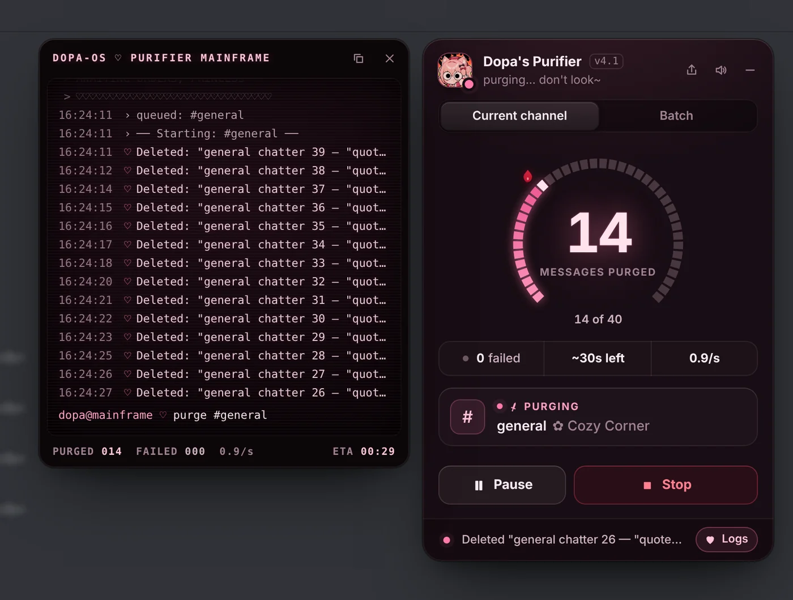
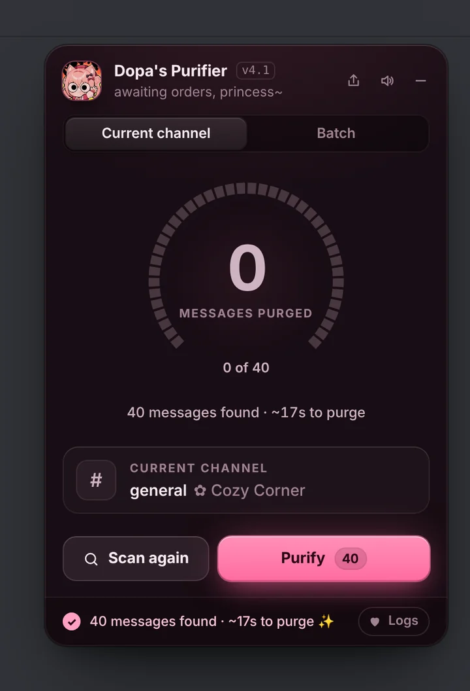
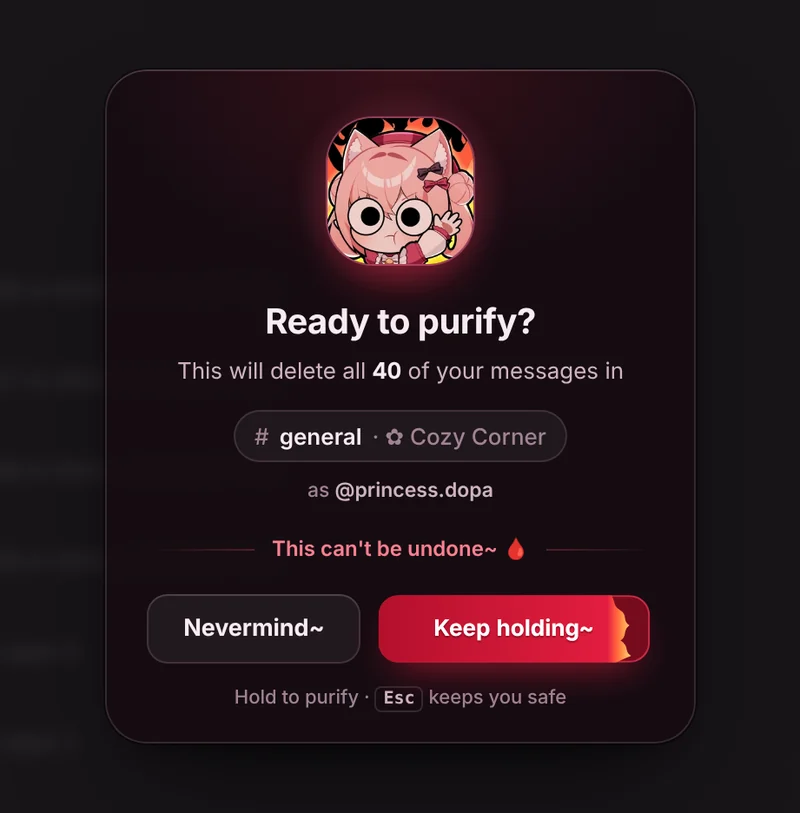
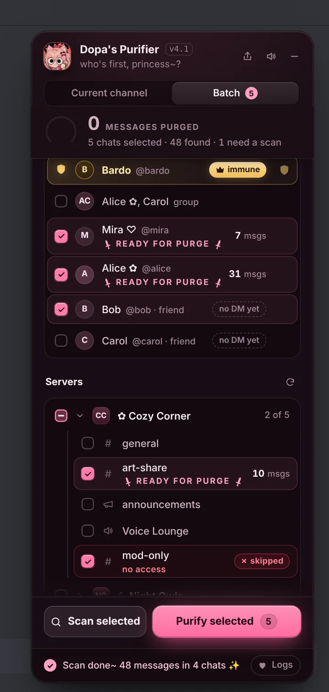
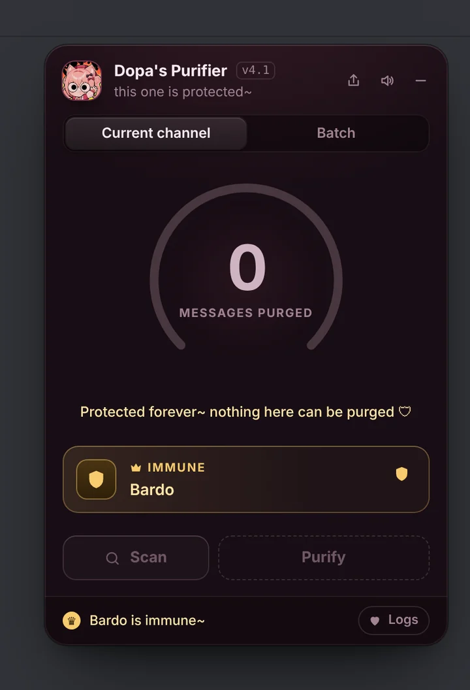

Wipe your Discord messages, gently.
Every message you ever sent in a DM, group or server — gone in a few clicks. Nothing else is touched.

Set it up
It runs inside Discord in your browser through a "userscript manager" extension: free on Chrome, Edge, Firefox, Opera and Brave, $2.99 on Safari. You only do this once — updates arrive by themselves.
On your phone, princess? ♡ Discord's phone app can't wear the Purifier~ Open this page on your computer and it takes two minutes ✨
Firefox for Android works too: add Tampermonkey, then open discord.com in “Desktop site” mode.
-
Add Tampermonkey to Chrome
Free, made for exactly this. Click Add to Chrome on the page that opens.
-
Switch on “Allow User Scripts”
Your browser keeps userscripts off until you say yes — without this, nothing happens.
- Right-click the Tampermonkey icon in your toolbar (it may be under the puzzle-piece Extensions button) and choose Manage extension.
- Turn on Allow User Scripts.
- Don't see that switch? Open
chrome://extensionsand turn on Developer mode (top right) instead.
-
Install the Purifier
Tampermonkey opens a page showing the script — click Install there. Come back here afterwards and this page ticks itself off.
-
Open Discord in this browser
Look top-right for the panel. Open any chat, press Scan, then Purify, and hold the red button. That's it~
Cute on the outside, thorough on the inside
It only ever deletes messages you sent, at a pace Discord is happy with, and shows you everything as it goes.

Scan in a second
See how many of your messages are in a chat and how long a purge takes.

Hold to purify
No accidental clicks: hold the button and watch it fill.

Many chats at once
Tick DMs and server channels, then purge them in one go.

Shield your people
Tap the shield on anyone and their chat is immune, forever.
Desktop app users
Easiest: use Discord in your browser
Same account, same chats — just at discord.com/app. Follow the steps above, purge, and go back to the app whenever you like.
Already on BetterDiscord?
- Download DopasPurifier.plugin.js.
- In Discord: User Settings → Plugins → Open Plugins Folder, drop the file in.
- Switch DopasPurifier on. The panel appears top-right.
New versions ask first, right inside Discord — press Update ♡
Download pluginGood to know
Is it safe? Does it send my login anywhere?
It runs entirely inside your own Discord tab (or the app, with BetterDiscord), using the session you're already logged in with — your login and messages never leave Discord.
The userscript talks to Discord and nothing else; Tampermonkey itself fetches new versions of it from GitHub. The BetterDiscord plugin also asks GitHub once each time it starts whether there's a new version. No servers of ours, no tracking~ ♡ The whole thing is open source, so anyone can check.
Can it delete other people's messages?
No. Discord only lets you delete your own messages, and the purifier only ever asks for yours. DMs with anyone you shield are left alone, even mid-purge, and Bardo is shielded from the start~ ♡ Shields cover one-to-one DMs, not group chats.
Can I undo a purge?
No — deleted means deleted. That's why there's a scan first and a hold-to-confirm button. Pause or Stop any time; nothing after that point is touched.
Could my account get in trouble?
Honest answer: Discord's terms don't allow automating your account, and any tool like this carries a small risk. The purifier works at a human-ish pace (about 40 messages a minute), slows down whenever Discord asks, and never runs on its own — you start every purge. Use it at your own discretion.
How long does it take?
About 40 messages a minute, so 1,000 messages take around 25 minutes — a pace Discord is happy with, and slower whenever it asks for a break. A scan tells you the estimate up front; you can minimise the panel and keep chatting while it works. Keep the Discord tab open until it's done.
How do updates work?
Tampermonkey checks for new versions automatically. If you want it now: Tampermonkey icon → Utilities → Check for userscript updates, or just click Install above again.
On BetterDiscord, the plugin checks each time Discord starts and asks before it updates.
Nothing shows up in Discord — help!
Nine times out of ten it's step 2: on Chrome, Edge, Opera and Brave the Allow User Scripts switch (or Developer mode) must be on. Then make sure Tampermonkey is enabled, the script is switched on in its dashboard, and reload Discord. Still stuck? Open an issue.